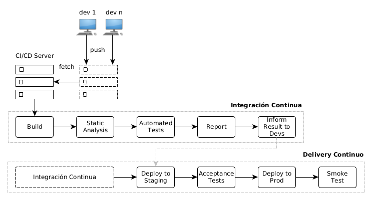
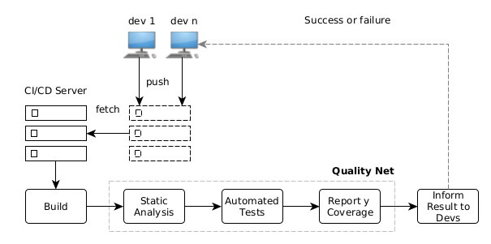
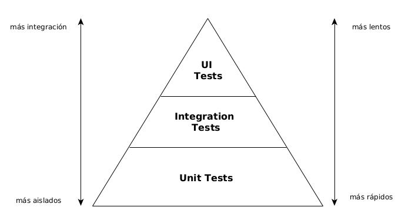
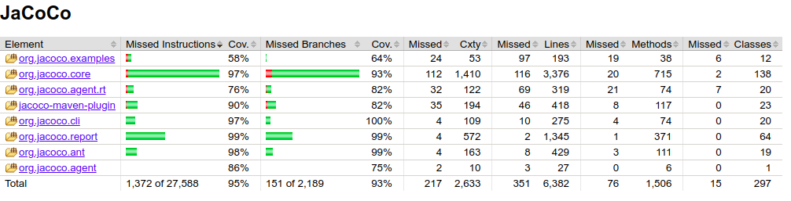
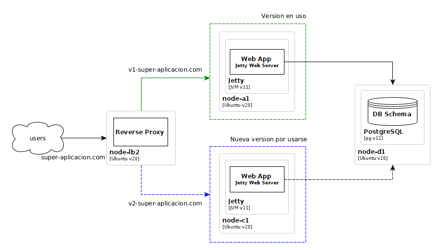
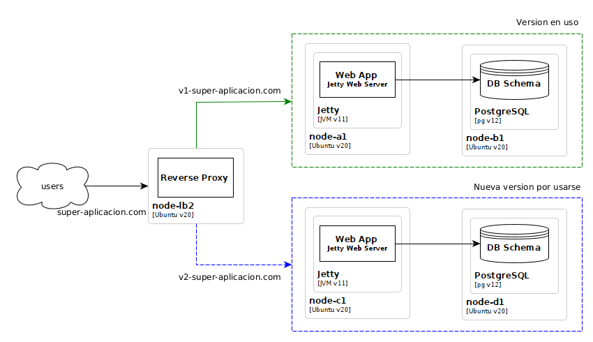
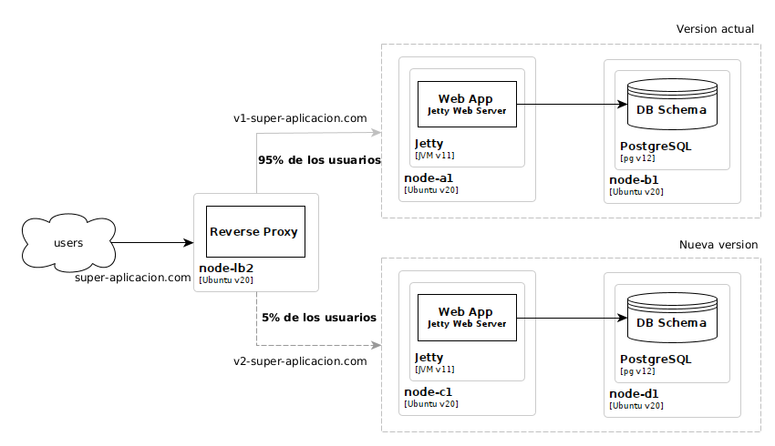

Integración y Delivery Continuo
Enrique Molinari
Integración y Delivery Continuo
¿De qué se trata?
Proceso automático que permite poner en PROD una nueva versión de una aplicación o servicio.
Esto requiere previamente verificar el funcionamiento mediantes testing automatizado y además la calidad del código fuente.
CI / CD
Integración Continua
Integración Continua: tools!
Nosotros vamos a utilizar:
¿Cómo incorporamos Github Actions a un proyecto?
- Crear el directorio .github/workflows en la raiz del proyecto.
- Allí adentro colocamos el archivo YAML (.yml) que contiene las instrucciones del proceso de integración continua. Veamos un ejemplo:
name: Demo
on: [push]
# un workflow puede tener mas de un job
jobs:
# nombre del único job en este workflow
demo-job:
runs-on: ubuntu-latest
# representa una secuencia de tareas a ejecutar
steps:
# nombre del step
- name: Check out repository code
uses: actions/checkout@v3
# nombre del step
- name: List files in the repository
run: |
ls ${{ github.workspace }}
# Simplemente ejecuta un echo
- run: echo "This job's status is ${{ job.status }}."Análisis Estático de Código Fuente
Como parte de la Quality Net existen herramientas que nos permiten, automáticamente (ideal para un proceso de CI), realizar ciertos chequeos sobre los fuentes, en dos cuestiones:
- Estilo de como escribimos código. Trabajando en equipo necesitamos consistencia.
- Potenciales bugs.
Verificación de Estilo con:
¿Usamos espacios o tabs para las tabulaciones? ¿Cuantos niveles?
¿Cómo escribimos ifs, fors o whiles? ¿Usamos llaves si tienen una sola sentencia?
¿Donde y cuando usamos mayúsculas? ¿minúsculas?
Verificación de Estilo con:
Vamos a utilizar la Guía de Estilos de Google.

Busca potenciales fallas o bugs. ¿Cuáles?
También detecta código duplicado! Copy/Paste Detector (CPD).
Similar a PMD, busca potenciales bugs. ¿Cuáles?
Código que permite SQL Injection y recursos (BDs) no cerrados correctamente son algunos de los diferentes a PMD.
Reglas SpotbugsFalsos positivos
Tanto PMD como Spotbugs pueden reportar falsos positivos. Usando anotaciones puedo quitar la verificación de cierto bloque de código, en PMD sería:
@SuppressWarnings("PMD.UnusedLocalVariable")
public class Bar {
void bar() {
int foo;
}
}
Falsos positivos
En Spotbugs, primero debe crear la anotación y luego usarla. Lo que vemos aca es un falso positivo real!.
@Retention(RetentionPolicy.CLASS)
public @interface SuppressFBWarnings {
String[] value() default {};
String justification() default "";
}
@SuppressFBWarnings(value = {"EI_EXPOSE_REP2"})
public JpaSalesOnline(EntityManager em) {
this.em = em;
}
Testing y Cobertura
Como parte de la Quality Net también necesitamos tener testing automatizado y medir su cobertura.
Categorías de Test y Herramientas
Unit Testing: JUnit (no solo modelo, controllers y servicios es posible también).
Integration Tests: Cada back-end framework provee facilidades.
UI Unit Tests (Javascript): Jest, Mocha, Jasmine.
End-to-End Tests: Playwright, Cypress, Protractor (solo con Angular), Selenium.
Mike Cohn's tests pyramid
Midiendo Cobertura
Entre 70% y 80% de cobertura es aceptable.
Maven
Permite manejar dependencias, ejecutar builds, generar reportes y documentación de un proyecto de software.
A travez de sus plugins podemos ejecutar Checkstyle, PMD, Spotbugs, Tests y generar documentación de calidad de código y cobertura. Lo podemos correr local y por supuesto también desde Github Actions.
Repo de ejemplo: Static Analisys
Quality Net en la Nube!
Codacy: Checkstyle, PMD, Spotbugs y similares para otros Lenguajes de Programación en la nube.
Code Climate: Tiene una métrica de mantenibilidad basada en 10 puntos: Maintainability Checks.
Codecov: Cobertura. LGTM: Security, finding vulnerabilities.
Se loguean (a travéz github) y accede a tu repo para analizarlo.
Mostra qué dicen las métricas de calidad
sobre tu código.
Badges (medallas)
Veamos algunos ejemplos de repos open source:
Con cero downtime!
Blue/Green Deployment
Hay que tener 2 ambientes de producción completos e identicos.
Uno que esta siendo utilizado por los usuarios.
Y otro que va a ser utilizado luego del nuevo deployment.
Blue/Green Deployment - Shared Database
Blue/Green Deployment - Shared Database
Requiere que los cambios de base de datos, scripts de DDL y DML, sean compatibles con la versión actual de la aplicación.
Primero se corren los scripts de base de datos, sin deployar una nueva versión. La compatibilidad garantiza que la versión actual sigue funcionando.
Luego se deploya la nueva versión de la aplicación en el ambiente blue.
Se prueba y si esta Ok, se cambia el proxy reverso para la nueva versión.
Blue/Green Deployment
Blue/Green Deployment
Requiere mantener las bases de datos de los ambientes green y blue sincronizados mediante replicación.
Canary Deployment
Canary Deployment
Requiere mantener las bases de datos de los ambientes sincronizados mediante replicación.